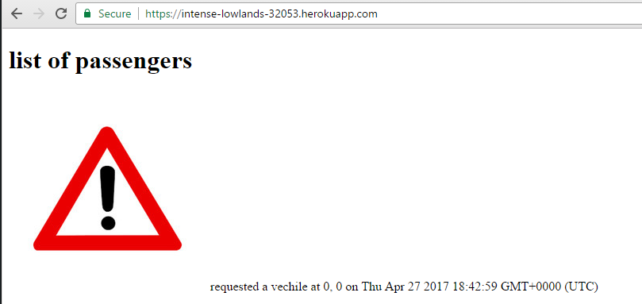
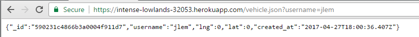

XSS vulnerability
Issue
Javascript from outside sources can be made to run on some pages of the website.Location
The Passenger page of the website, the map shown to clients.Severity
High
The outside javascript is able to control the Passengers page, potentially putting any visitors at risk. As the page displays user credentials, the vulnerability should be given some priority.
The records with a script as the username are handled by the program as vehicles, and are shown without a name on the map shown to clients. This could put users at risk, as they are unable to identify the individual through the map.
Description
The username field of the records stored in the database can be exploited to store scripts that are later executed when the the records are loaded into a web page.
Proof
An outside script causing an alert to appear on the passenger page.
The compromised records appearing on the map.
Resolution
Validate the user input before storing it in the database.
var validator = require('validator');
username = username.replace(/[^\w\s]/gi, '');
Duplicate database entries
Issue
The database contains and returns multiple instances of the same user.
Location
Passenger page, the map shown to clients.
Severity
High
The integrity of the database is compromised because users can appear multiple times.
It is a privacy concern because every interaction with a user is being logged.
Description
A new record is kept and stored in the database every time that a POST request is made to the database. This allows for the same user to appear in multiple locations at once, and violates the integrity of the data.
Proof
Multiple instances of the same users being returned by the database
The Passenger page showing multiple instances of the same user repeatedly.
Resolution
Use functions like update() with upsert enabled instead of inserting every time a request is made.
HTML injection
Issue
HTML can be injected into the passenger page
Location
Passengers pageSeverity
High
The page can be modified to load offensive content, redirect users to compromised sites, and potentially steal loaded user information.
Passenger page
Description
It is possible to inject HTML code into the passenger page by exploiting the user input provided in the username field.
Proof
An image sourced from a different website being shown as a username.
Resolution
Validate the user input before storing it in the database.
var validator = require('validator');
username = username.replace(/[^\w\s]/gi, '');
Incorrect database access
Issue
The vehicle.json page is implemented incorrectly.
Location
MongoDB pages on Heroku
Severity
Medium
The website is returning the wrong information. It would require knowledge of a user's username, and an assumption about the underlying problem in order to exploit the mistake. The passenger data is made available by the same program elsewhere regardless.
vehicle.json page
Description
The vehicle.json page is not able to return any vehicles. It has been directed to search in the passengers collection of the database. This would have broken any component that would have depended on the page to retrieve vehicle data.
Proof
The portion of code directing the site to query the wrong collection of the database.
A passenger's data being returned by the page.
The record for a vehicle that's been previously entered cannot be found.
Resolution
Modify the program to use the vehicles collection instead of passengers
db.collection("vehicles"...)
Hardcoded credentials
Issue
Usernames are hardcoded into the program.
Location
index.html code for the map component of the program.Severity
High
It is possible to steal a user's credentials from the website.
Description
User credentials, like the username, are hardcoded into the program. Anyone that would visit the website would have access to that user's information.
Proof

A hardcoded username in the program's code.
Resolution
Ask for a username on the website instead of hardcoding it, or add a password
MongoDB injection attack
Issue
It is possible to retrieve data from the database in a way that wasn't intended.
Location
vehicle.json pageSeverity
High
Data for users intended to be kept private can possibly be leaked.
Description
The vehicle.json page allows for unintended retrieval of user information from the database. By modifying the entered query to include mongodb commands, the database may return the information of a different user.Proof
The information for the user "testin" is returned by a query instead of empty brackets.
Resolution
Validation must be added to the vehicle.json component of the program. Characters like the dollar sign need to targeted specifically.
Unprotected database
Issue
The database does not ask for any credentials when accessing it.
Location
MongoDB pages on HerokuSeverity
High
Anyone can access the database and submit data to it, which can make it unreliable and dangerous.
Description
Posting data to the server doesn't require any kind of authentication and it is open to receiving input from any source.
Proof
Accessing the database only requires knowing the URL.
Resolution
Add a password to the database